یک آگهی Airbnb فقط عکس داشت. بدون بازدید، بدون نقشه و بدون متر، از همان عکسها پلان آپارتمان را بازسازی کردیم و یک تور سهبعدی اسکچی ساختیم که در هر مرورگری باز میشود و در هر ایستگاه، عکس واقعی را روی مدل نشان میدهد.
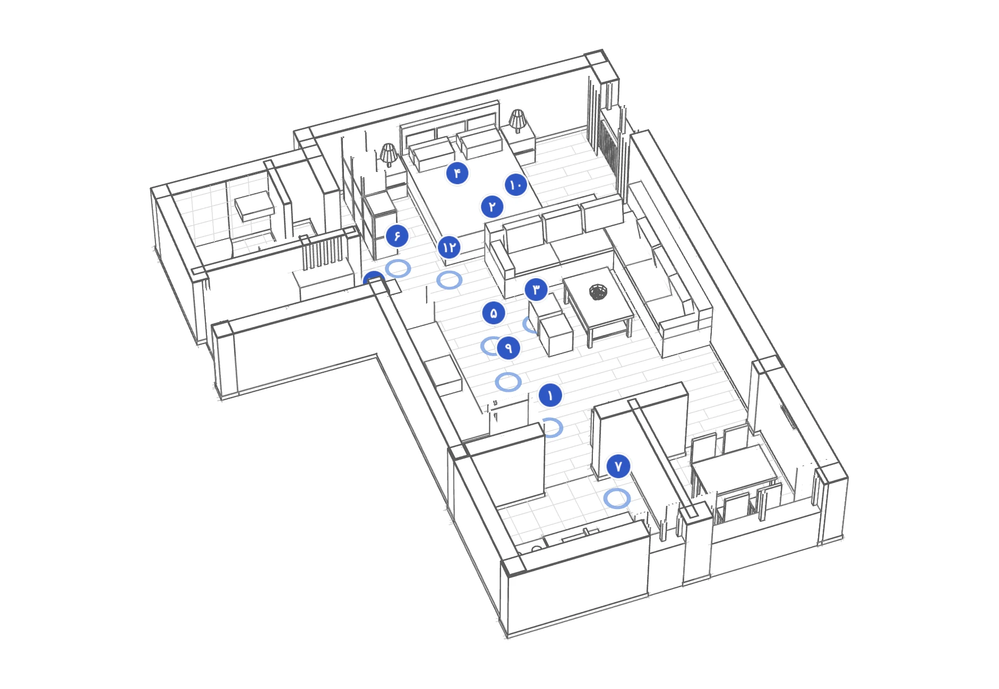
مهمانی که آگهی را ورق میزند، تخت و کاناپه و آشپزخانه را میبیند، اما نمیفهمد اینها کنار هم چطور چیده شدهاند. حمام کجاست؟ از در که وارد میشوی چه میبینی؟ آشپزخانه جداست یا در همان اتاق؟
هدف: بدون هیچ دادهای جز همین دوازده عکس، فضای خانه را آنقدر دقیق بازسازی کنیم که بشود در آن قدم زد، و هر جا حدس زدهایم، صادقانه بگوییم.
هر عکس یک نقطهی دید است. پنجره، قوسها و یخچال در چند عکس تکرار میشوند و از روی همین تکرارها، جای هر دیوار معلوم شد.
تخت ۱۶۰×۲۰۰، اجاق ۶۰ سانتی و ارتفاع یخچال، خطکشهای پنهان عکسها بودند. همهی اندازهها از اینها درآمد.
پلان با محل و جهت دوربین هر عکس کشیده شد. کنار هر بخش نوشتیم چقدر به آن مطمئنیم.
دیوار، قوس، پنجره و مبلمان مستقیم از دادهی پلان ساخته میشوند. پلان و مدل یک منبع دارند و همیشه با هم میخوانند.
لبههای هندسه به خط تبدیل شد. از زاویهی هر ایستگاه، Nano Banana رندری ساخت که هندسهاش را از طرح و جنسش را از عکس واقعی میگیرد.
یک اتاق اصلی بزرگ با خواب، نشیمن و کابینتهای آشپزخانه؛ دو درگاه قوسی به ناهارخوری و آشپزخانهی جدا؛ و در ضلع دیگر، راهروی ورودی و حمام.
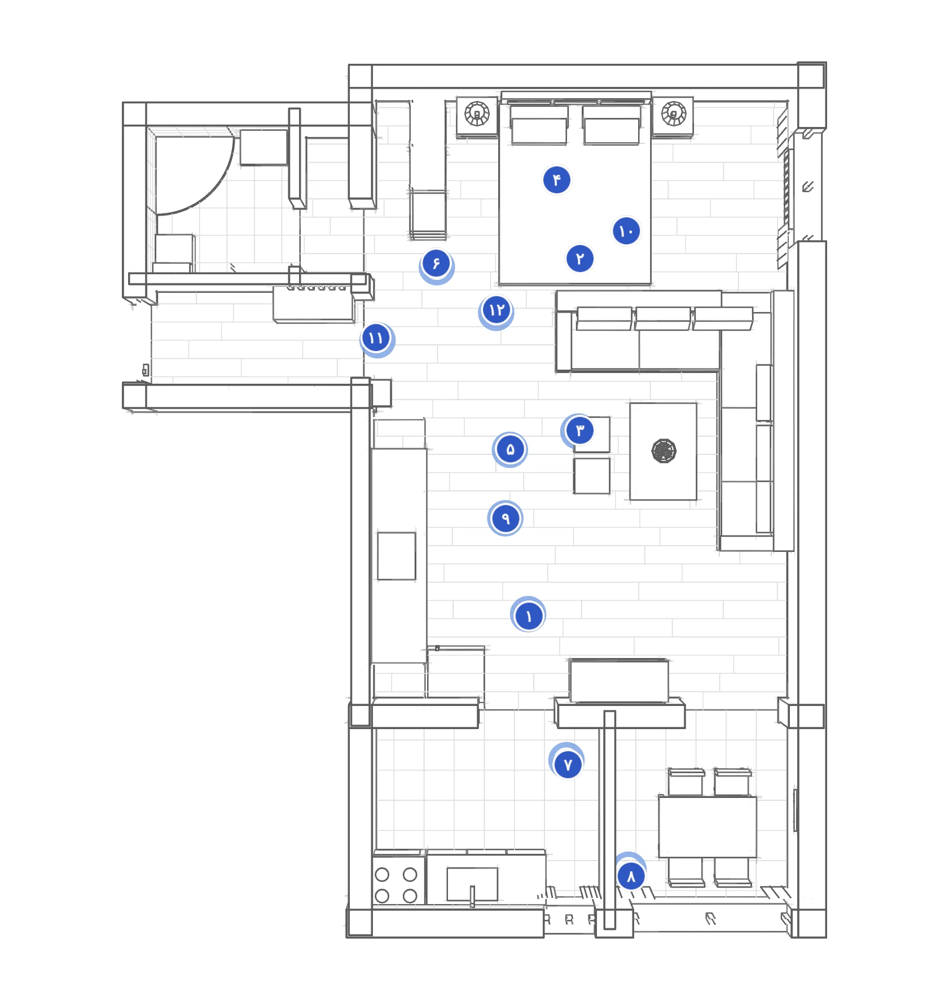
خط وسط را بکشید. دوربین مدل دقیقاً همانجایی ایستاده که عکاس ایستاده بود. جاهایی که کمی جابهجاست، همان جاهایی است که اندازه را تخمین زدهایم.
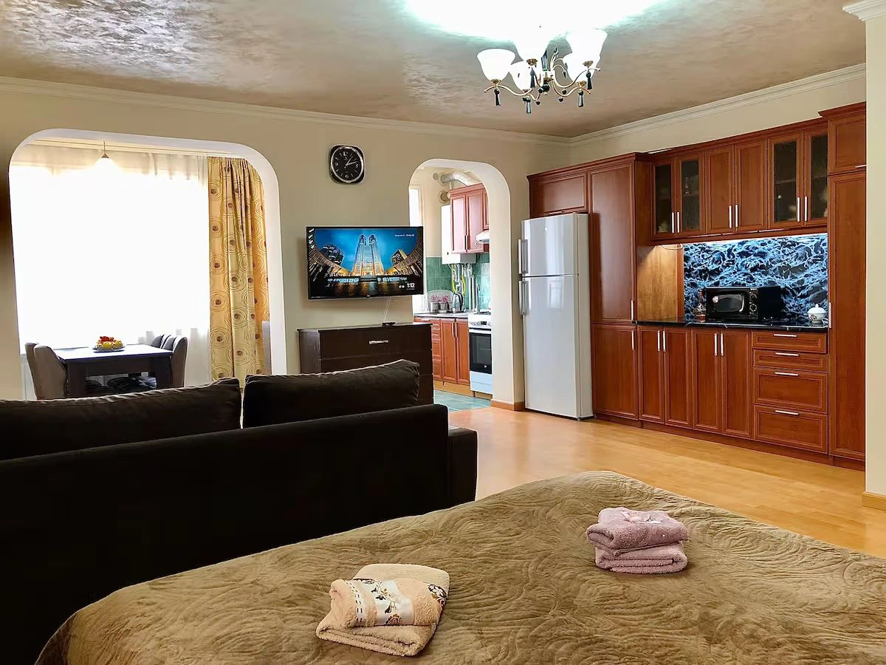
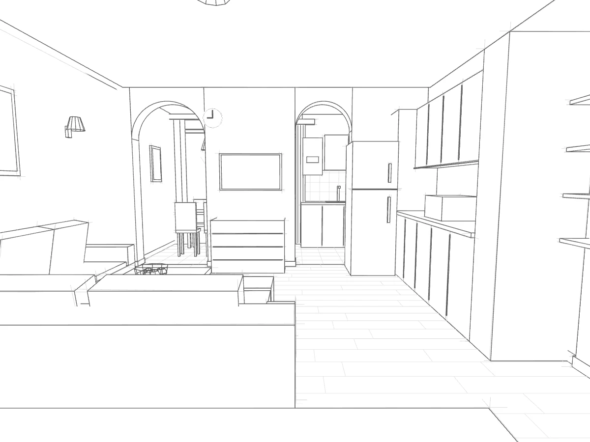
PHOTOMODEL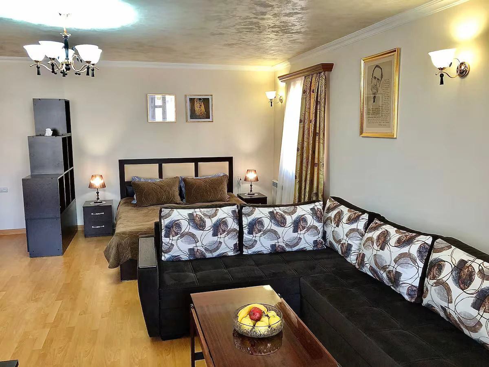
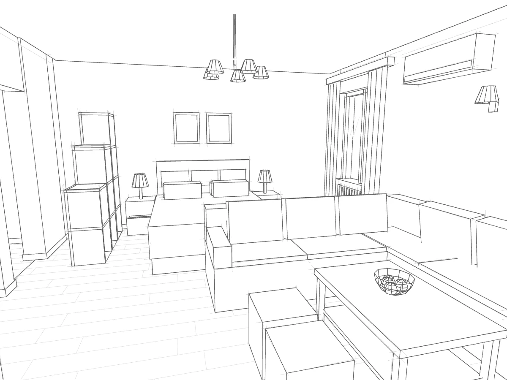
PHOTOMODELبرای هر ایستگاه، نمای اسکچی مدل و عکس واقعی همان نقطه را به Nano Banana دادیم: طرح برای هندسه و زاویه، عکس برای جنس، رنگ و نور. نتیجه دقیقاً روی مدل مینشیند. این تصاویر رندرند، نه عکس؛ جزئیاتی که در عکسها دیده نمیشد را مدل ساخته است.
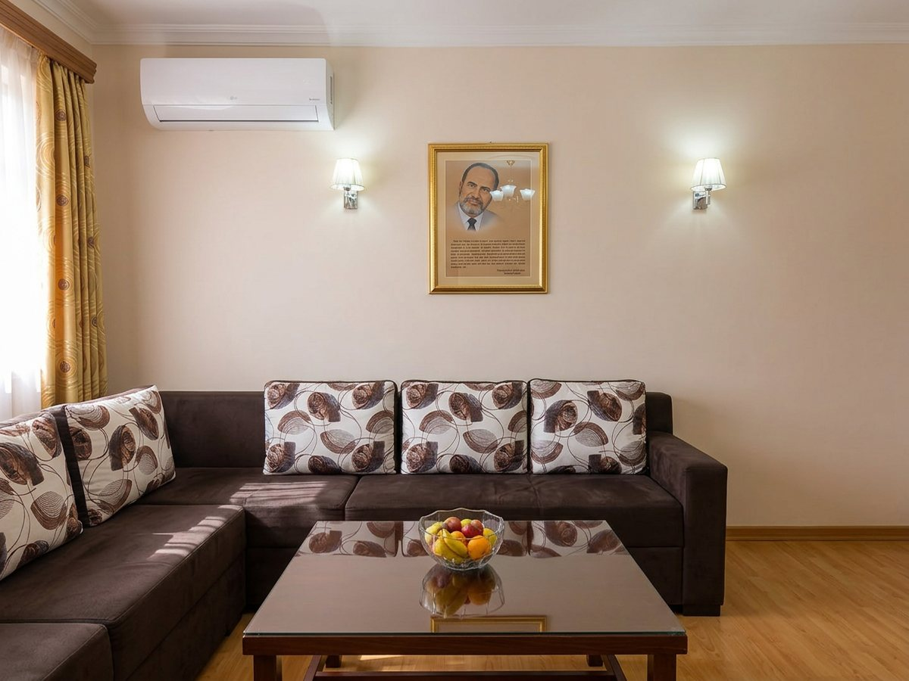
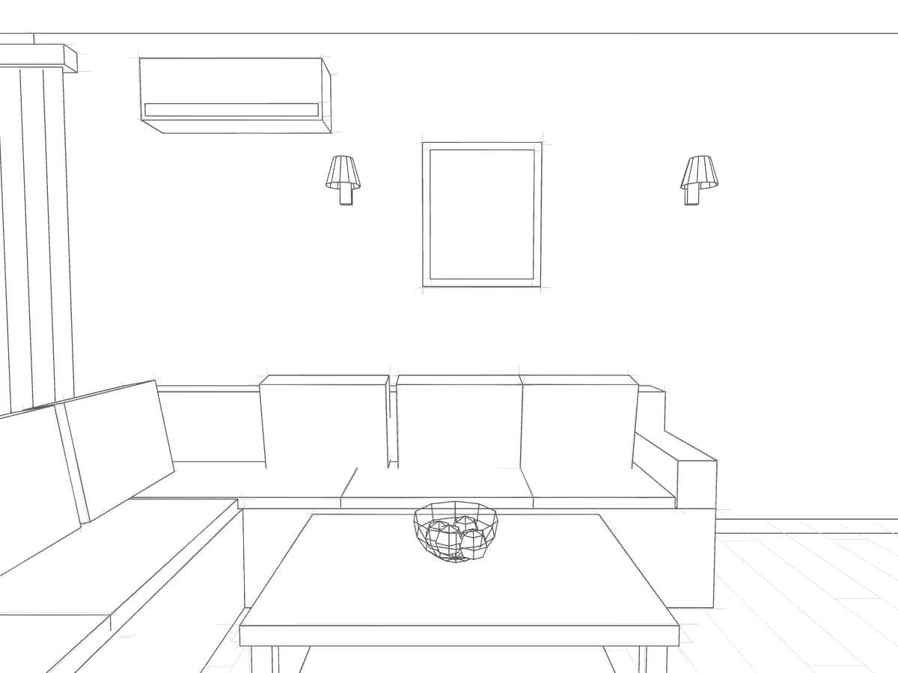
RENDERSKETCH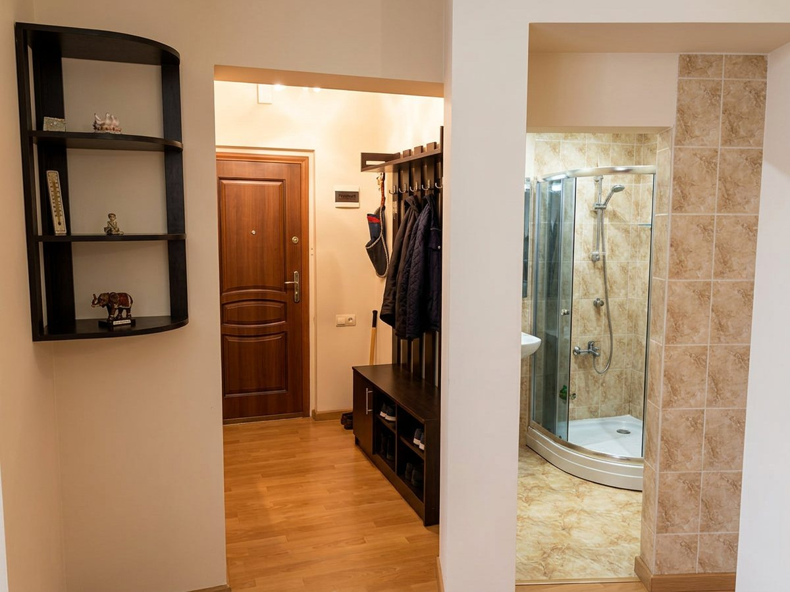
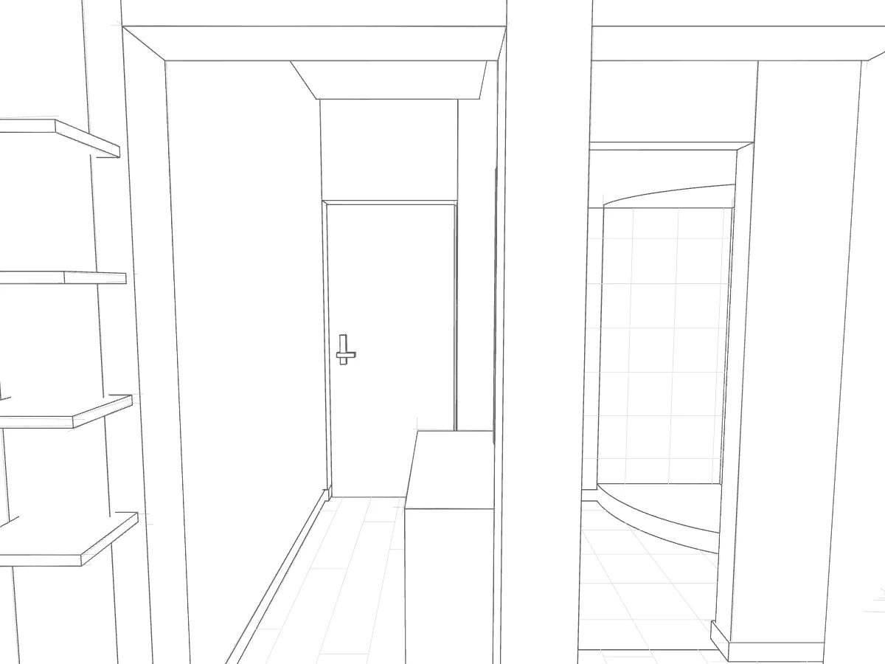
RENDERSKETCH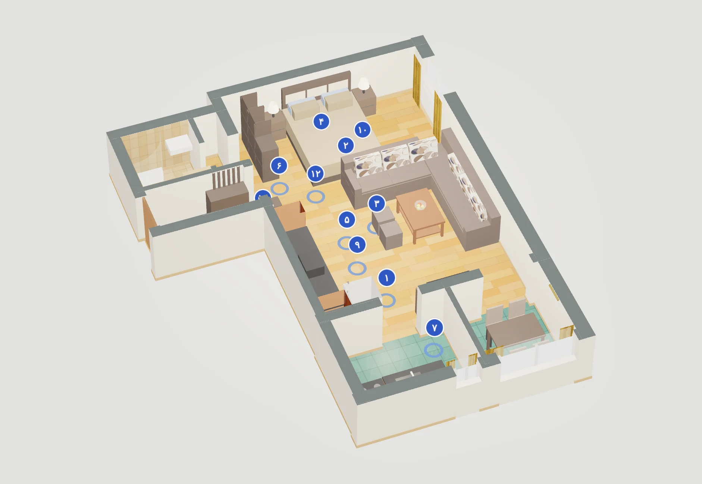
مهمان قبل از رزرو، چیدمان خانه را میفهمد و سؤالهای تکراری کمتر میشود.
وقتی هنوز عکسی نیست، از روی نقشه یک تور اسکچی ساخته میشود.
وضع موجود از عکسها مدل میشود و طرح جدید روی همان مدل امتحان میشود.
هر اتاق یک تور سبک دارد که داخل سایت رزرو جا میشود.